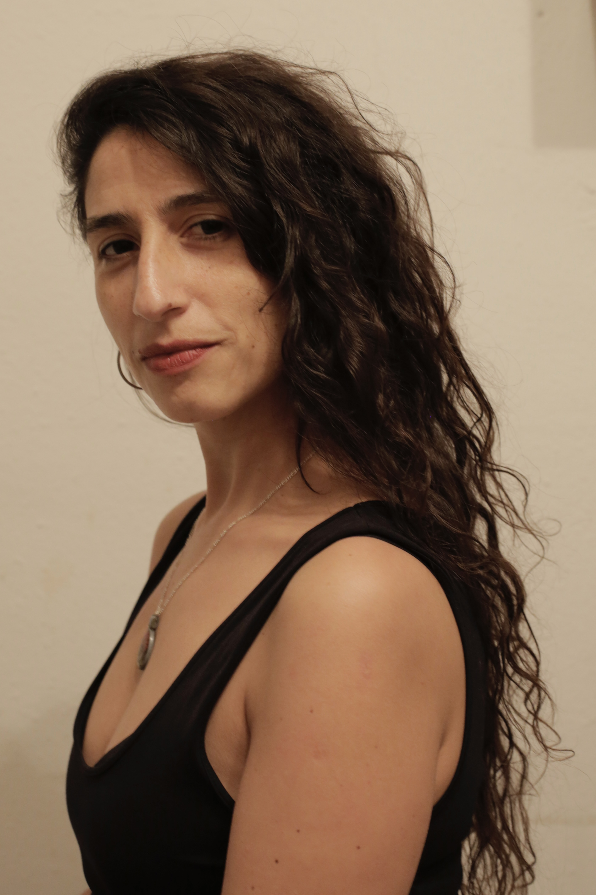

Alejandra López Puebla
Periodista (Universidad de La Serena, Chile), especializada en Investigación y Guión de Cine Documental en Argentina (ENERC y Guionarte), Realización de Documentales en Cuba (EICTV) y Teoría y Práctica del Documental Creativo en España (Universidad Autónoma de Barcelona). En las artes en vivo se formó en Dramaturgia en Argentina (Enerc, Arjé) y en Escena y Tecnología Digital en España (Institut del Teatre de Barcelona). Es una de las fundadoras de la Organización Sin Fines de Lucro "Colectiva Varias", que articula a las Mujeres y Disidencias Audiovisuales de la Región de Coquimbo, Chile. También es una de las directoras de la Compañía de Teatro "Didascalia y Viceversa", con la cual ha circulado en Chile, Argentina y Uruguay. Sus trabajos de cine, teatro y videoinstalación exploran las intersecciones entre lo social y lo íntimo desde los espacios que separan y unen el cine/teatro y lo analógico/digital. Ha sido seleccionada en instancias nacionales e internacionales, destacando Aricadoc, Vórtice, BoliviaLab, Femcine, Documenta Sur, Conecta, Arca, Cine en el Borde de la Corporación Chilena de Video y Artes electrónicas, Docsbarcelona, Doxs!, IDFA, entre otros. Actualmente se encuentra trabajando en la video instalación "Milanka" y en los documentales "Anaís" y "La Reja Abierta".
Formación:
2014 - Licenciatura en Comunicación Social, mención Periodismo - Universidad de La Serena, Chile.
2015 - Documental de Investigación - Escuela Nacional de Experimentación Cinematográfica. Buenos Aires, Argentina.
2015 - Dramaturgia, Del detalle de la imagen al relato dramático - Escuela Nacional de Experimentación Cinematográfica. Buenos Aires, Argentina.
2015 - Guión de Documentales - Guionarte. Buenos Aires, Argentina
2016 - Dramaturgia Contemporánea - Escuela de Artes de la Escritura (ARJÉ). Buenos Aires, Argentina.
2016 - Realización de Documentales - Escuela de Cine y Televisión San Antonio de Los Baños. Cuba.
2024 - Máster en Teoría y Práctica del Documental Creativo - Universidad Autónoma de Barcelona. España.
2025 - Postgrado en Escena y Tecnología Digital - Instituto del Teatro de Barcelona. España.
Becas:
2015 - Beca de escritura creativa, dramaturgia contemporánea. Buenos Aires, Argentina.
2016 - Beca Fondo Audiovisual de Chile para Formación Internacional, Cuba.
2022 - Beca Fondo Audiovisual de Chile para Formación Internacional, España.
Residencias y laboratorios:
2019 - Laboratorio de Dramaturgia Contemporánea — Centro Dramático Nacional de España. Embajada de España. Santiago, Chile.
2021 - Residencia de creación teatral "Hola… Podemos Hablar" - Canela, Chile.
2022 - Residencia de documental "ARCA" - Puerto Williams, Chile.
2022 - Residencia "Vórtice" de Video Experimental, Plataforma Experimental de Artes - Valparaíso, Chile.
2022 - Laboratorio de Desarrollo de Documentales "Documenta Sur", Chile.
2023 - Residencia de creación teatral "PinoShit" - La Serena, Chile.
2024 - Residencia "Graner", Centro de Creación de Danza y Artes Vivas - Barcelona, Chile.
2024 - Residencia Fábrica de Creación "L’Estruch" - Barcelona, España.
2025 - Residencia Artística Técnica "Nau Ivanow" - Barcelona, España.
Experiencia artística:
2016 Cofundadora Compañía de teatro audiovisual Didascalia y Viceversa. La Serena, Chile.
2017 - Instalación visual En el Viento Asquerosamente Inmóvil - Universidad de Valparaíso y Didascalia y Viceversa. Valparaíso, Chile.
2019 - Cofundadora y directora Asociación Colectiva Audiovisual Varias. La Serena, Chile.
2019 - Co-directora Festival de Teatro de Dramatículas. La Serena, Chile.
2019 - Dramaturga y co-directora Tango Barrial - Didascalia y Viceversa. La Serena, Chile.
2020 - Dramaturga Alma Mater - EMAD Montevideo, Uruguay.
2021 - Selección AricaDoc La Reja Abierta. Arica, Chile.
2021 - Selección obra Tango Barrial en Temporales Internacionales. Puerto Montt, Chile.
2022 - Dramaturga y directora Hola, ¿Podemos hablar? - Compañía de teatro Didascalia y Viceversa. La Serena, Chile.
2023 - Creadora digital Pino Shit - Compañía de teatro Didascalia y Viceversa. La Serena, Chile.
2024 - Codirectora · Cortometraje documental La Filla de Elles. Barcelona, España.
2024 - Exhinición "La Filla d`Elles" en IDFA. Amsterdam, Países Bajos.
2024 - Exhibición "Revuelta" en Film Festival Censurados. Perú.
2025 - Exhibición "La Filla d`elles" Doxs!. Alemania.
2025 - Exhibición "La Filla d`elles" en DocsBarcelona. España.
2025 - Guionista y directora Largometraje documental Anaís - Colectiva Varias. Chile/España.
2025 - Guionista y directora Largometraje documental La Reja Abierta - Axis Mundi Producciones. Chile/España.
2025 - Selección oficial La Filla d`elles en octubre corto. Arnedo, España
2025 - Selección videoinstalación Prisma en Cine en Borde de la Corporación Chilena de Video y Artes Electrónicas.
Docencia:
2020 - Cine Documental - Universidad Central. La Serena, Chile.
2022 - Apreciación Cinematográfica con Enfoque de Género - Universidad de La Serena. Chile.
2023 - Cine para Mujeres con adicción - Metzineres. Barcelona, España.
2023 - Cine para adolescentes con perspectiva de género - Festival de Cine de Mujeres y Diversidades. Coquimbo, Chile.
2024 - Asesora de Guión Documental Corazón de Avellano de Julieta Herrera. Virtual.
